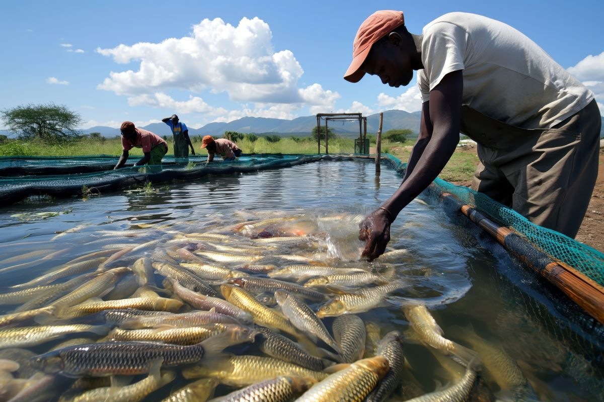
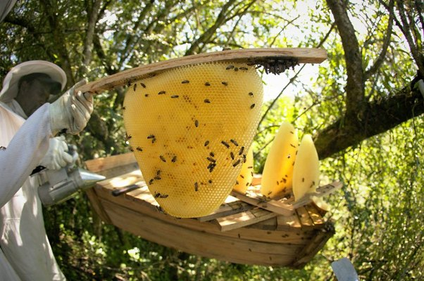

Bright Institute of Agriculture – Masindi
Our Courses
Bright Institute of Agriculture – Masindi provides practical, skills-based agricultural
training aimed at producing competent farmers, agripreneurs, and agricultural professionals.
Our programs focus on hands-on learning, modern farming techniques, and income-generating skills.
🎓 Diploma Programs
- National Diploma in Agriculture
- National Diploma in Animal Production and Management
- National Diploma in Agribusiness Management
📜 Certificate Programs
- National Certificate in Agriculture (S4 Leavers)
- Certificate in Agribusiness Management
- Certificate in Floriculture Production and Management
- Junior Vocational Certificate in Agriculture (P7 Leavers)
Hands-On Practical Training
Students participate directly in production units such as fish farming, beekeeping,
livestock, crop production, and value addition to ensure real-world competence.


⚡ Short Courses
- ICT in Agriculture
- Value Addition & Agro-processing
- Agro Irrigation Systems
- Safe Use of Agro Chemicals
- Piggery Management
- Fish Farming & Aquaculture
- Mushroom Production
- Dairy Farming
- Poultry Production
- Agro Mechanization
- Farm Management
- Maggot Production
- Aquaponics
- Beekeeping
- Greenhouse Farming
- Organic Farming
- Soil Fertility Management
- Seed Production
- Climate-Smart Agriculture
- Agricultural Entrepreneurship
- Post-Harvest Handling
- Livestock Health & Biosecurity
Director
Mr. Barungi Davis
📞 0772 469 055
0774 121 456
0780 462 929
💬